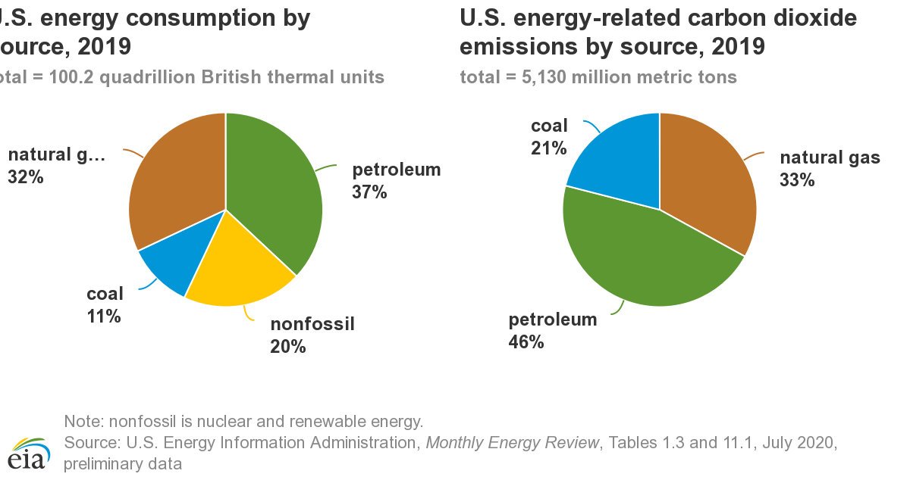

Solving climate change is a long way to go
The Countdown session that Ted leads is about climate change, a big issue in the world.
It divides it into four titles: Urgency, transmission, breakthrough and action. I personally appreciate the rational logic between those titles. Step by step, solving problems of climate change that negatively impacts humans and other creatures in the world is a process. Climate change doesn't happen overnight, so neither does the resolution.
Let’s see how climate change works.
The clip why the world is warming up in the urgency session is a good metaphor to understand one of the key questions about climate change: global warming. The atmosphere is considered as the glass of the wall. The thicker glass is , the more heat is captured.
Based on Chapter 2 of Climate Change Biology, some gases in the Earth’s atmosphere “trap” heat.
Sunlight warms the Earth’s surface, which then radiates long-wave radiation. Some of this radiation is absorbed and reemitted by gases such as CO2 and water vapor. Part of the reemitted radiation is directed back at the Earth. This warms the lower reaches of the atmosphere, much as glass in a greenhouse traps heat from the sun, and so is known as the greenhouse effect.
People usually like the term of global warming to describe the greenhouse effect, but today because scientists have documented so many manifestations of the effects of greenhouse gases in the atmosphere—including both increases and decreases in precipitation, warming, and even short-term cooling. The broader term “climate change” is preferred.
The gases that cause greenhouse effect are called greenhouse gas.
Carbon dioxide and water vapor are the two most abundant greenhouse gases in the atmosphere. They both occur naturally, but carbon dioxide is also released by human burning fossil fuel. In the twentieth century, the concentration of carbon dioxide in the atmosphere increased more than 30%, which is mainly due to the burning fossil fuel.
Let’s be visually clear.

The figure that comes from the U.S Energy Information Administration(EIA) shows the 46 percentage of energy-related carbon dioxide emissions in 2019 is from petroleum.
And it’s really tricky when people finally start to do something for our planet, the results turn out to be harmful. For example, paper recycling is considered as a good way to reduce carbon dioxide and methane, one of the greenhouse gas since it is expected to save forests which can absorb carbon dioxide and to avoid emitting more methane in landfill.
Unfortunately, the truth is that there are already some articles talking about the adverse impact on the climate of paper recycling.
In anthropocene magazine, I find an article Paper recycling isn’t necessarily good for the climate. It said if all waste paper was recycled, emissions could increase by 10%, based on the researchers report in the Nature Sustainability study. And that’s because recycling paper uses more fossil fuel electricity than making new paper. The emissions would drastically go down if paper production and recycling were powered by renewable energy.
I found evidence from another figure in EIA. The data show how much fossil fuel electricity emits the gas.
.png)
Concerning the solution of climate change, we still need to be more careful. When those Infrastructure for cleaning energy is built, like the factory and machine, the investment flows into the market and creates demand for laborers. Looks good right? What will happen after those investments are abandoned when they are blamed for polluting our planet? Workers reAlso the harmful impact to the planet might be irreversible.
It’s lucky because President-elect Joe Biden outlined a bold plan to lead a clean energy revolution.
As an environmental journalist, I have to doubt if climate change will be solved with those plans since the same voices filled the media now. We need positivity but we also need balance.
Not every person believes in climate change. This is another challenge to communicate with them.